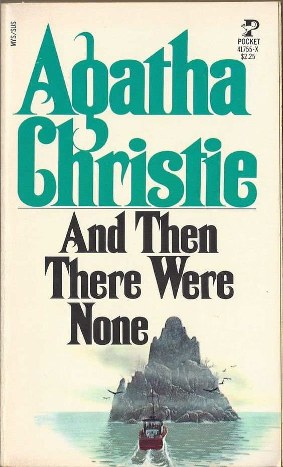

anne De green gabels book
the tale of a red-headed orphan girl named Anne Shirley who lives on
Prince Edward Island.
She gets adopted by Matthew and Marilla Cuthbert

And Then Where None
Ten strangers, with dark secrets, are invited to an isolated
island.
As the guests start dying one by one

Harry Potter
Harry Potter is an Orphaned Boy who defeats Voldemort, one of the greatest Dark Wizards of all time and loses some people he loves along the way.